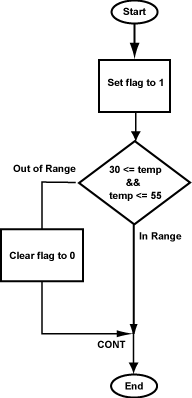

With assembly language it is essential to make a plan before coding.
The flowchart for the program is at right. The first box sets a flag to a default value in advance of the test that might change it. This is a common trick.
The range test is in two parts.
The first part (in this program)
tests if temp is less than or equal to 55.
However, the machine instruction is "set on less than".
If temp is out of range a branch is taken to
out.
The branch is followed by a no-op for the branch
delay.
Here is an outline of the program:

## tempRange.asm
##
## Check that 30 <= temp <= 55
## Set flag to 1 if in range, to 0 if out of range
##
## Registers:
## $2 -- temperature
## $3 -- in range / out of range indicator flag
## $8 -- scratch
.text
.globl main
# Set range indicator to 1
main: ori $3,$0,1 # set to 1 (in range)
# Test 30 <= temp <= 55
sltiu $8,$2, # $8=1 if temp <= 55
beq $8,$ , # 0? out of range
sll $0,$0,0 # delay
. . . . # more instructions
# Out of Range: clear range indicator to 0
out:
. . . . # clear flag to 0
# continue
cont: sll $0,$0,0 # target for the jump
Fill in the blanks.